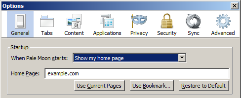
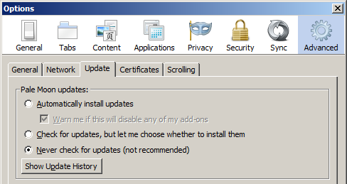

After configuring Pale Moon according to this guide it's rating changes like so:
The first thing to do, after you have downloaded Pale Moon, is to turn off your internet connection. Then install the browser and change the homepage to something else. In the "options" dialog:
The next step is to disable update checking, you can do that like this:
Finally, you should set the following options in about:config:
| Spyware Feature | about:config flag | about:config value |
|---|---|---|
| Addon Blocklist | extensions.blocklist.enabled | False |
| OCSP querying | services.sync.prefs.sync.security.OCSP.enabled | False |
| OCSP querying | security.OCSP.GET.enabled | False |
| OCSP querying | security.OCSP.require | False |
| OCSP querying | security.OCSP.enabled | 0 |
| Geolocation | geo.enabled | False |
If you want to edit this article, or contribute your own article(s), visit us at the git repo on Codeberg. All contributions must be licensed under the CC0 license to be accepted.